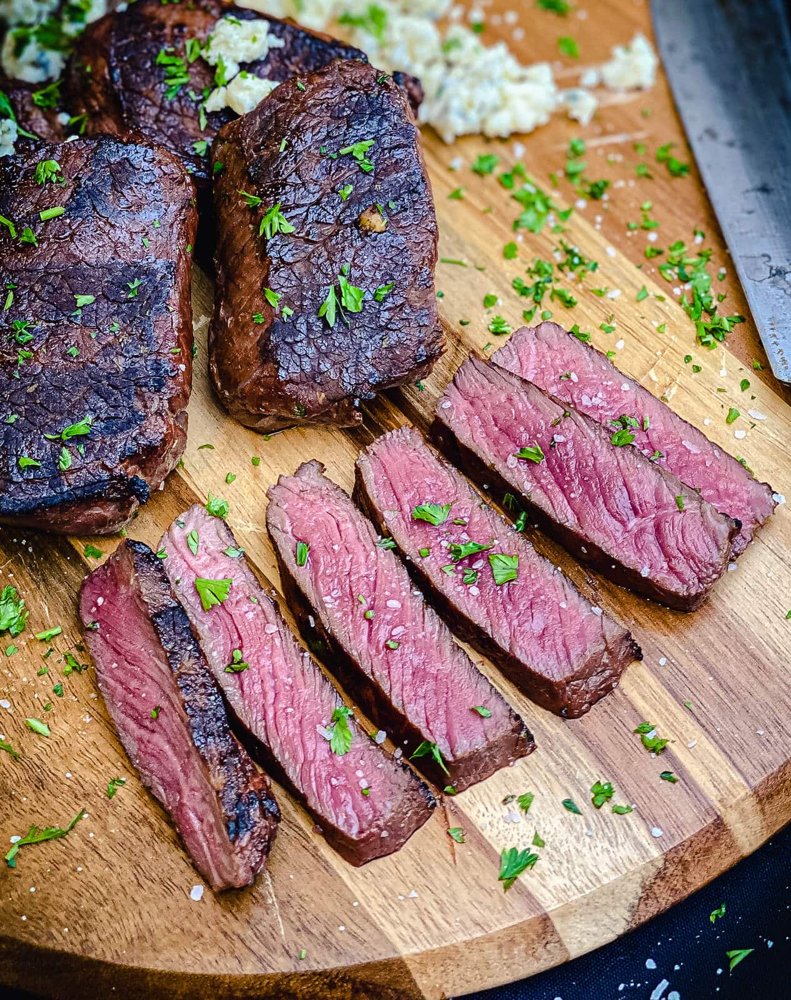

Steak

A juicy, tender, basted, delicious steak.
Ingredients
- Steak (whichever cut is preferred)
- Garlic cloves
- Rosemary
- Butter
Steps
- Place steak into hot skillet.
- Cook until internal temp reaches 130°F to 135°F, or your preferred doneness.
- Add butter, garlic cloves, and rosemary to the pan.
- Baste steak 10 to 20 times.
- Remove from pan and let steak rest.